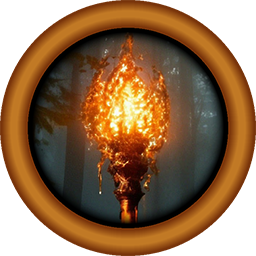

Dire Torch is a free companion app for the upcoming tactical card game, called Dire Fog.
Using Dire Torch you will get:
- In-game overlay for deck building
More useful features will come!
To use Dire Torch, simply launch it along with Dire Fog. The overlay will automatically appear when
you enter the deck builder menu.
To close the application, just exit Dire Fog, or if it's still open, you can close it by selecting
it in the taskbar or even via Task Manager.